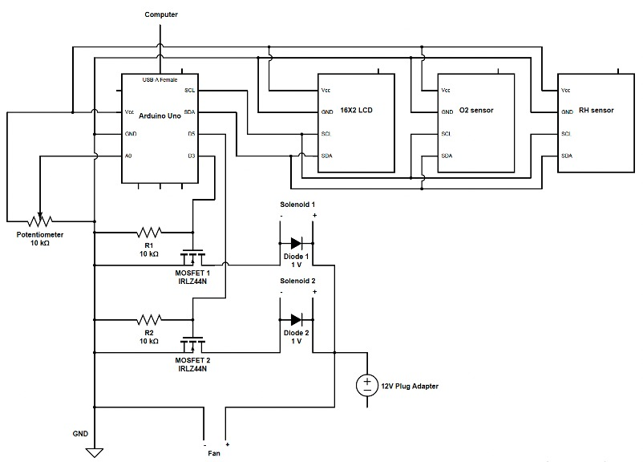
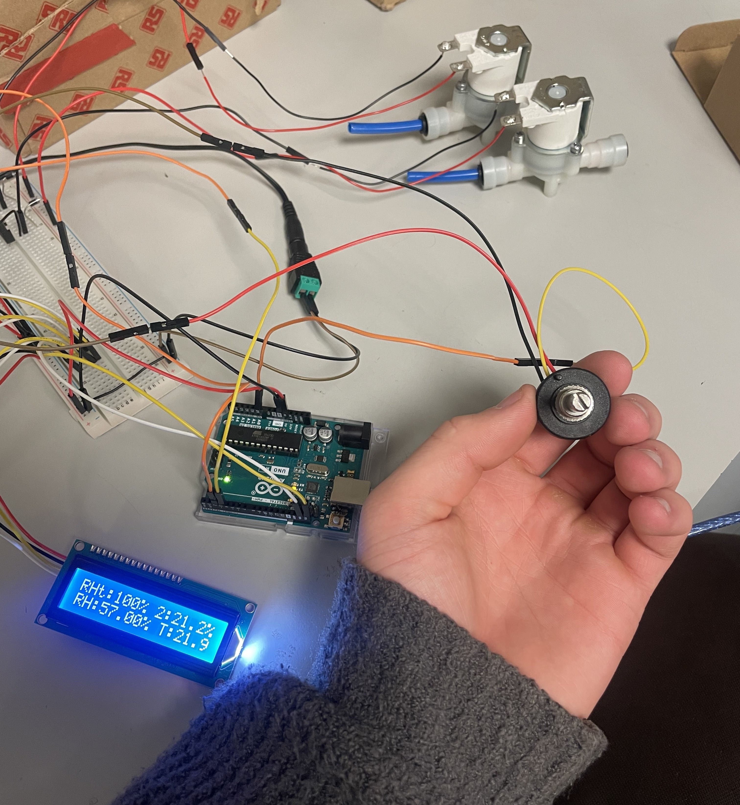
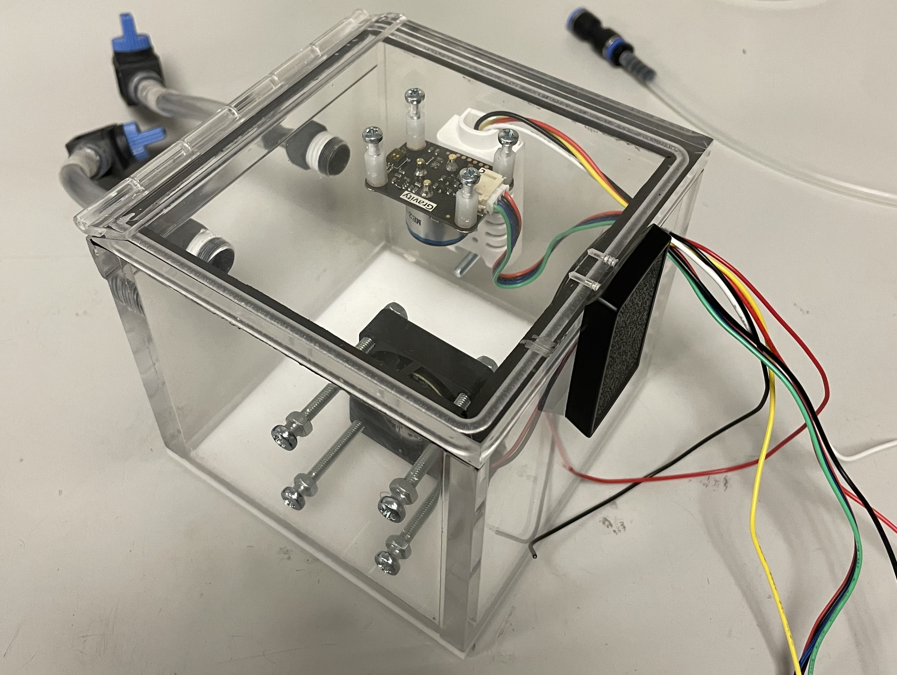
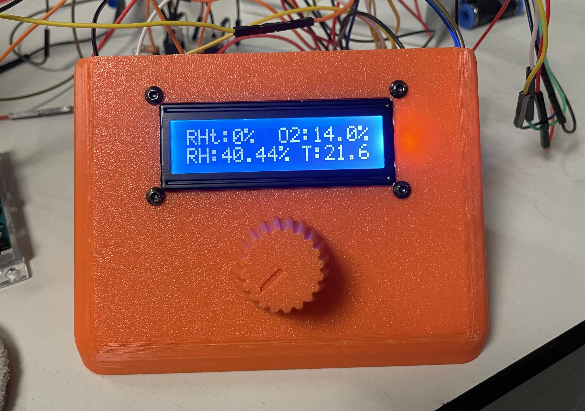
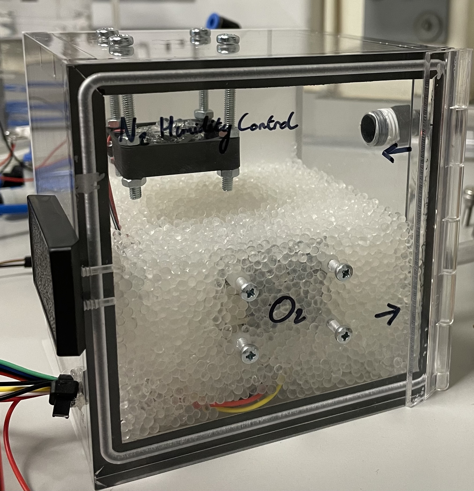
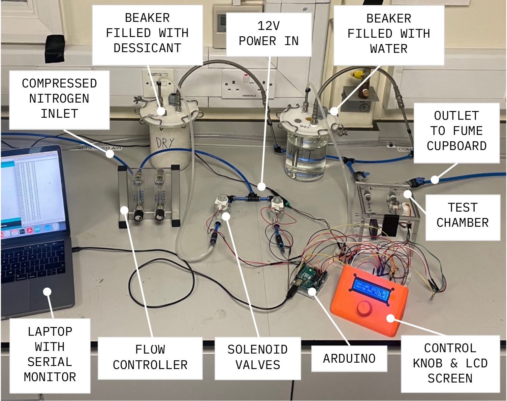
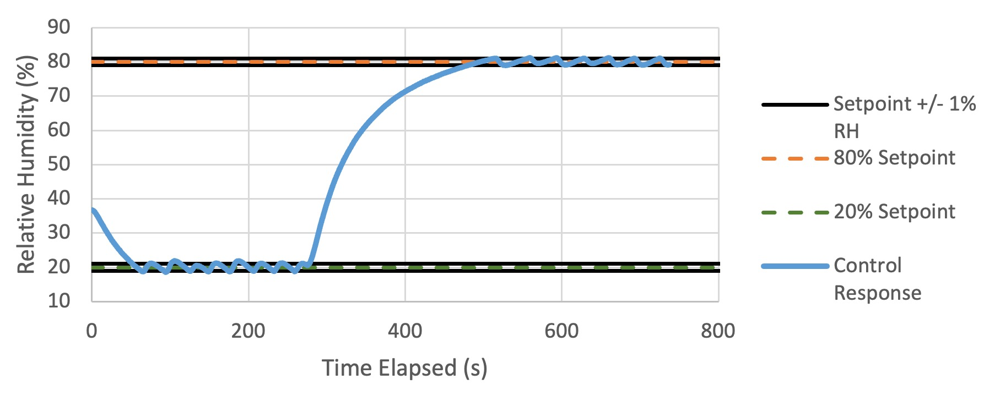
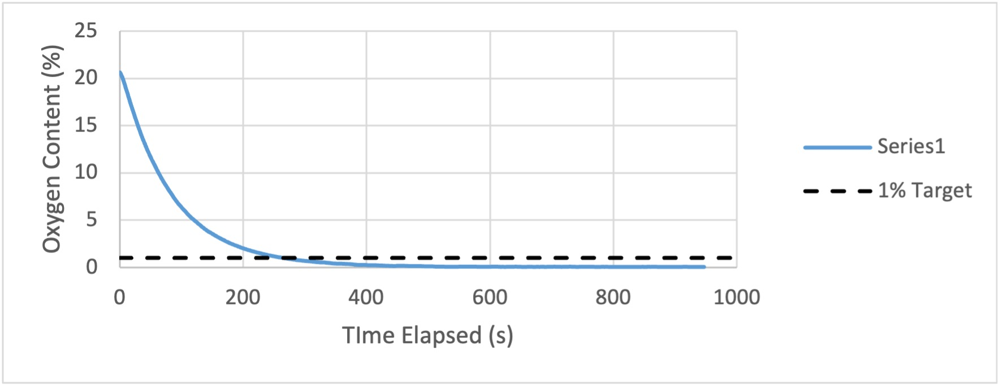

As part of my bachelors individual engineering project, I was tasked with developing an environmental test chamber for analysing tribological interfaces. What started as a tribological project, evolved into a full system development for a cost-effective method of humidity and oxygen content control for a chamber. The system managed to vary humidity between 5% and 95% to +/- 0.7%, and reduce oxygen concentration to below 1%.
This project was the first time that I developed a full electronic control system, and so I endeavoured to keep it as simple as possible — part of the aim was to develop a cost-effective solution using existing lab equipment, so it aligned well. I selected an Arduino for the control system, with all communication protocols as I2C.

The system used two solenoid valves, controlling flow through a wet and a dry beaker to manage to humidity where the inlet fluid was nitrogen to displace the oxygen through the humidity control process. All my circuitry was done using a breadboard so I could get to grips with different components quickly.

Inside the test environment (a hermetically sealed box) I placed a relative humidity sensor, an oxygen sensor and a fan next to the inlet to distribute the flow around the chamber. It was critical that the oxygen sensor did not get wet, and therefore it was placed upside down on the roof of the box. The outlet hole for the wires was sealed with hot glue.

Target humidity was set using a control knob mounted to a potentiometer, with real-time values relayed to an LCD screen mounted to the same panel.

As the solenoid valves were normally closed, during extended operation (for example to achieve a high humidity setpoint), they would get quite warm. To mitigate this, I implemented control logic that surged with 12V to open the valves, and then hold at 7V, managing to keep their temperature within limits.
Another issue was the sensor calibration. I filled the test chamber with desiccant that I dried the night before and set the humidity sensor to have that reading as perfectly arid. This did appear to work, although I had no calibrated sensor with which I could compare - if I was to do the project again, this is the first place I'd improve.



Humidity control response

Oxygen concentration response
At the time this project was the most involved, multi-discipline system that I had worked on. Fluids, electronics and control systems were all new to me, but I managed to get them all to work for a final effective system.